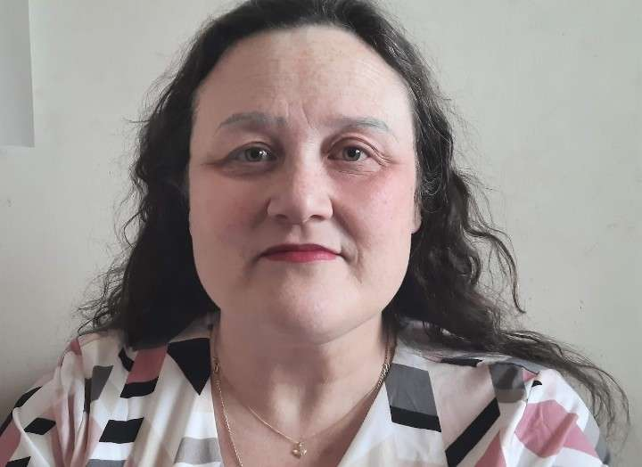

Courtney Stuart
Coaching
Get Life Coaching here!
My accent will probably give it away where I am from when you talk to me, but I’ve lived in Canada for twenty years, so I guess you could say I’m part of the furniture now.
I've known from an early age that I wanted to be of service to people and in general, my life path has followed this route. I’ve been a school teacher, a social worker, ordained minister of religion and now a qualified life coach.
In a few months I will add death doula to the list of services I will offer to the people of my community.
Life hasn't always been a bowl of cherries for me. I've dealt with unexplained infertility, cancer, heart disease, escaping an abusive marriage, immigration, divorce, single parenthood, homelessness, and mental health issues.
Through it all, faith has carried me, and so here I am, hoping to be of service to you.
I love all things sparkly (working in a jewelry store was the best retail experience of my life.
"Courtney, step away from the gemstones!") pink is my signature colour, I am a confirmed bookworm and story writer, documentary and movie specialist, I consider chocolate a major food group and wearing dresses is my thing.


Email me at courtneystuart442@gmail.com to get started!